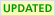

Macros Quick Reference
See Macros for a detailed description of how to use Macros
Predefined Macros
Deprecated macros
The following macros are deprecated and should not be used.
Shortcuts
- TOPICURL -- absolute URL for the current topic
- BR -- line break
- CLEAR -- clear floats
- BULLET -- •
- VBAR -- |
- CARET -- ^
- BB -- line break and bullet
For example, %CARET% will appear as ^
Icons
- H -

- I -

- M -

- N -

- P -

- Q -

- S -

- T -
- U - 
- X -

- Y -

Related Topics: Macros, PreferenceSettings, UserDocumentationCategory